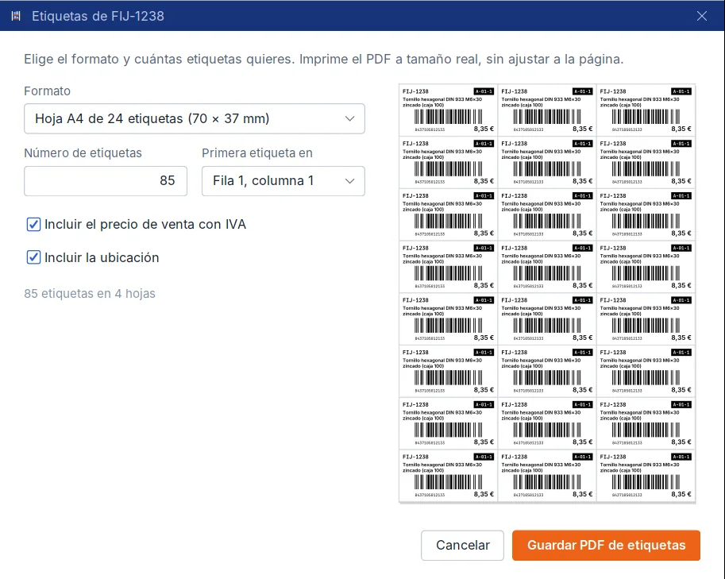

Catálogo y etiquetas con código de barras
Cada producto con su referencia, código de barras, categoría, IVA, proveedor habitual, precio, mínimo, máximo y ubicación. La ficha enseña el stock, el margen y lo último que se ha movido.
- Etiquetas en PDF con código de barras, precio con IVA y ubicación, en hojas A4 de 24 o 65 o sueltas, aprovechando una hoja empezada.
- Lo que tiene historia no se borra: se archiva.
